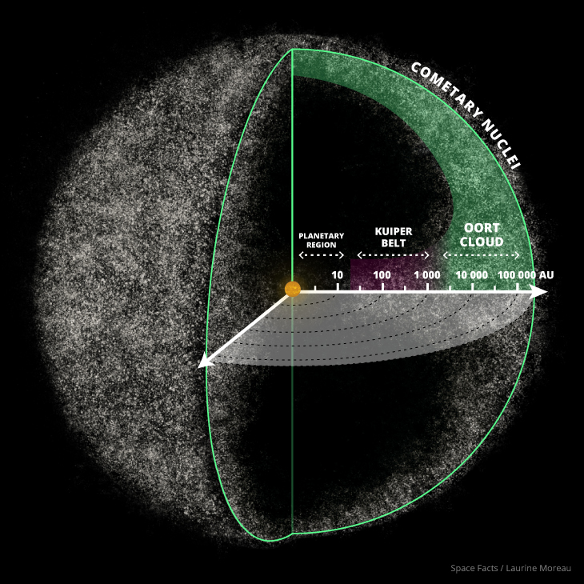

Облако Оорта
Облако Оорта — гипотетическая сферическая область Солнечной системы, служащая источником долгопериодических комет. Инструментально существование облака Оорта не подтверждено, однако многие косвенные факты указывают на его существование.
Предполагаемое расстояние до внешних границ облака Оорта от Солнца составляет от 50 000 до 100 000 а. е. — примерно, в среднем световой год. Внешняя граница облака Оорта определяет гравитационную границу Солнечной системы — сферу Хилла, определяемую для Солнечной системы в 2 св. года.
Облако Оорта, как предполагают, включает две отдельные области: сферическое внешнее облако Оорта и внутреннее облако Оорта в форме диска. Объекты в облаке Оорта в значительной степени состоят из водяных, аммиачных и метановых льдов. Астрономы полагают, что объекты, составляющие облако Оорта, сформировались около Солнца и были рассеяны далеко в космос гравитационными эффектами планет-гигантов на раннем этапе развития Солнечной системы.
Астрономы считают, что оно является источником всех долгопериодических комет и комет галлеевского типа, прилетающих в Солнечную систему, а также многих кентавров и комет семейства Юпитера.
